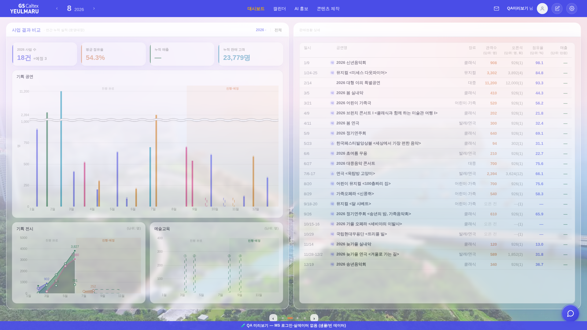
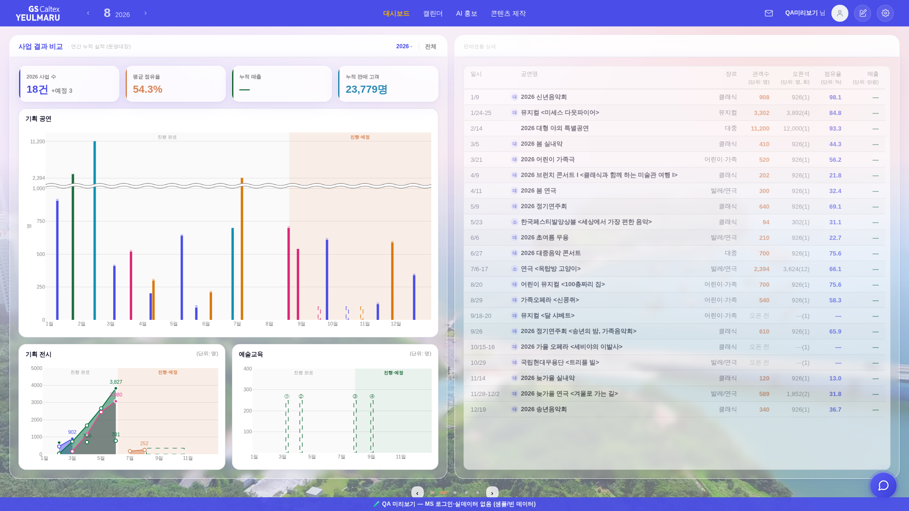
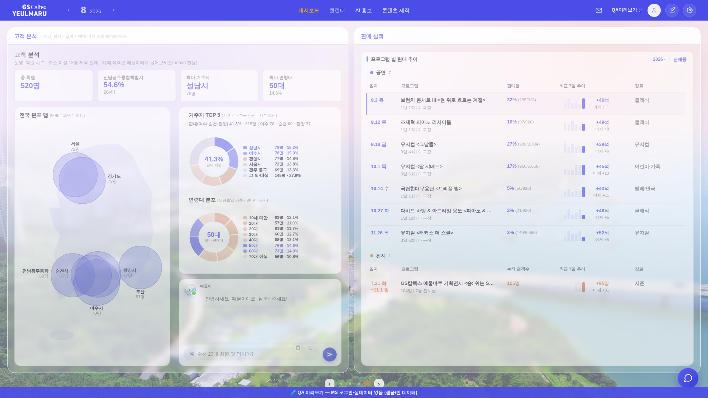
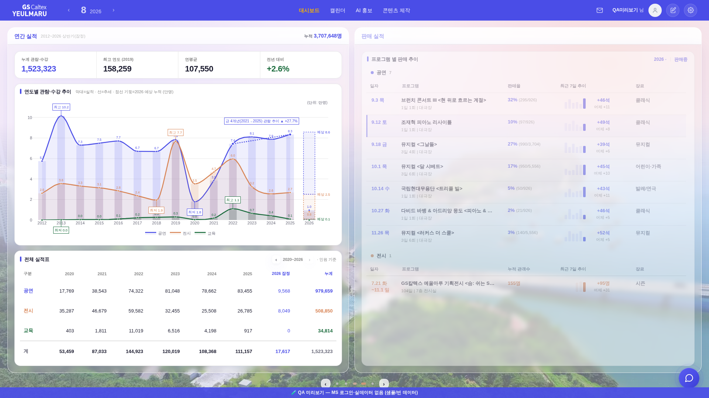
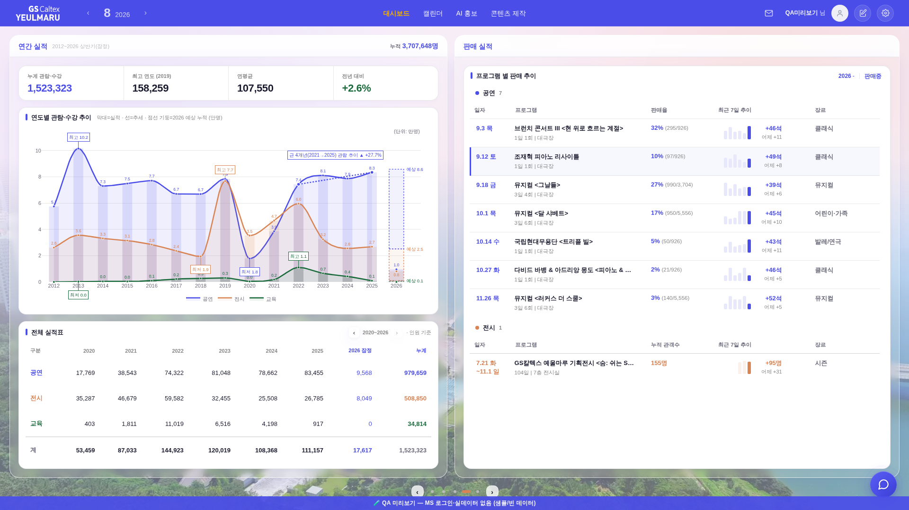

?qa=admin 목데이터 · 1920×1080). 대상 = index.html 대시보드 슬라이드.
우 열(#rail-yrm)은 260804부터 _bizRightNeedsRedraw()가 「그릴 면이 바뀔 때만 다시 그린다」를 지켜 왔다.
그런데 좌 열(#biz-main)에는 같은 판정이 아예 없었다 — _bizBookRender는 var cols=['biz-main']로,
_bizmFlip은 ['biz-main'].concat(…)로 매 넘김마다 무조건 좌 열을 재렌더+디졸브했다.
그래서 좌 면이 그대로인 칸(①→② = 좌측 「사업 결과 비교」 유지, 바뀌는 건 우측 판매 실적→판매현황 상세)에서도 좌 열이 통째로 지워졌다 다시 올라왔다 = 운영자가 본 「양 쪽이 둘다 번쩍」. 반대로 ②→③은 우 열이 계약을 지켜 좌측만 바뀌었다 = 「정본」.
둘째 문제(③→④)는 차례표의 칸 수 문제였다. 구 4칸 배치는 한 바퀴에 좌가 3번·우가 2번 바뀌어 열-변경 합이 5인데 칸이 4개 — 비둘기집으로 「두 열이 같이 바뀌는 칸」이 반드시 1개 남는다(구판에선 그게 ③→④). 그 셈이 그대로 해법을 말해 준다: 칸을 5개로 늘리면 합 5 = 칸 5 → 매 칸 정확히 한 열.
_bizLeftId() / _bizLeftNeedsRedraw()를 우 열과 대칭으로 신설.
신원 = 「좌 열이 지금 그리는 화면」(넓은 화면 3면은 전반 3-1만 그리므로 우 열이 상세든 아니든 같은 신원).
도장은 _bizInlineRender가 찍는다 → 필터·연도 토글·모드 복귀 같은 강제 재렌더 경로도 자동으로 최신._BIZ_SLIDES에 {p:1,d:0}(연간 실적 | 판매 실적) 한 칸 추가.
새 화면이 아니라 이미 있는 두 면의 조합(구 「1-2면 펼침」 그대로)이다._bizSlidesAudit()가 인접 칸(순환 포함)이 좌·우 중 정확히 하나만 다른지 검사하고,
어긋나면 콘솔에 경고한다. 화면은 안 건드린다 = 「강하게 박아」의 실체(다음에 표를 잘못 고치면 즉시 드러난다).넘김 한가운데 프레임(디졸브 out 구간). 캡처 시계만 1/10로 늦춰(CDP Animation.setPlaybackRate) 같은 지점을 흔들림 없이 찍었다 — 코드·CSS 무변경.




새로 만든 화면이 아니라 이미 있는 두 면을 나란히 세운 조합. 이 칸이 있어야 「좌만 / 우만」이 번갈아 성립한다.

측정법: 넘김 직전 MutationObserver를 걸고, 프레임 내용 교체([data-bizmhead]·[data-bizmbox]·#bizm-dots-row의 자식 교체 = _bizmSwap이 하는 일)만 센다.
차트(Plotly) 내부 SVG 갱신은 열 재렌더가 아니라서 제외했다 — 같은 값으로 다시 그리는 것이라 넘김 전/후 좌 열 캡처가 바이트 단위로 동일함을 따로 실측했다(박스 rect·차트 rect·innerHTML 길이도 전부 불변).
| 칸 | 가는 곳 | 다시 그린 열 | 디졸브 걸린 열 | 열 수 |
| ①→② | 사업 결과 비교 | 상세 | 좌+우 | 좌+우 | 2 |
| ②→③ | 연간 실적 | 상세 | 좌 | 좌 | 1 |
| ③→④ | 고객 분석 | 판매 실적 | 좌+우 | 좌+우 | 2 |
| ④→① | 사업 결과 비교 | 판매 실적 | 좌 | 좌 | 1 |
| 칸 | 가는 곳 | 다시 그린 열 | 디졸브 걸린 열 | 열 수 |
| ①→② | 사업 결과 비교 | 상세 | 우 | 우 | 1 |
| ②→③ | 연간 실적 | 상세 | 좌 | 좌 | 1 |
| ③→④ | 연간 실적 | 판매 실적 | 우 | 우 | 1 |
| ④→⑤ | 고객 분석 | 판매 실적 | 좌 | 좌 | 1 |
| ⑤→① | 사업 결과 비교 | 판매 실적 | 좌 | 좌 | 1 |
한 칸 최대 동시 재렌더 열 = 2 → 1. 비admin(3면 책 · 4칸)도 같은 방식으로 전 칸 1열임을 코드 실행으로 확인했다.
python3 tools/check_design.py — 통과(새 raw hex·새 :root·새 토큰 0).npm run smoke:layout — PASS(1920×1080 이젤·흰 라인 계약 유지 · 박스 Δ0 · 흰 카드 하단 Δ0). 이 게이트는 _bizSlides()를 그대로 읽어 늘어난 5번째 칸까지 자동으로 검사한다._srailAlignTop() rAF 1패스는 그대로 돈다(두 박스 하단선 계약 무접촉).null로 되돌린다 = 다음 넘김에 정상 화면으로 복구.